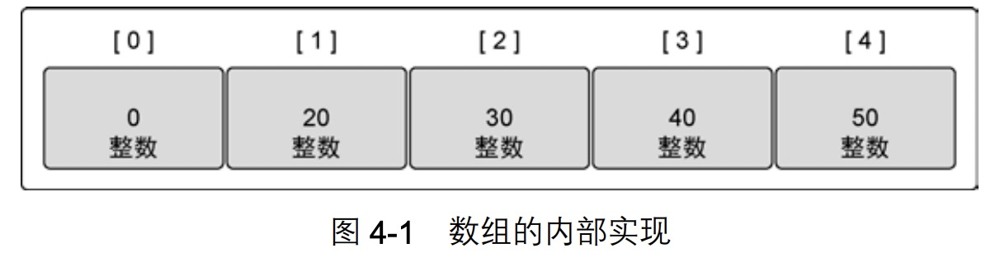
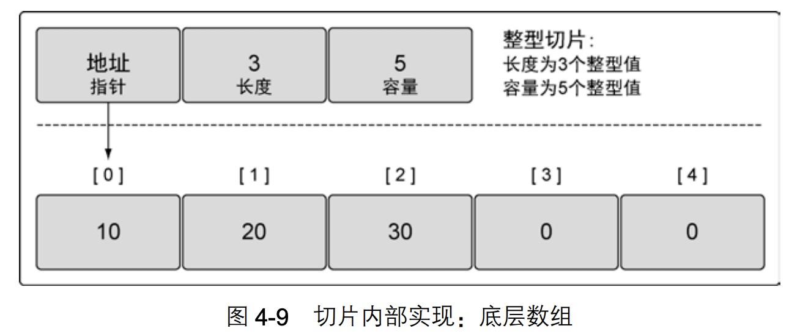
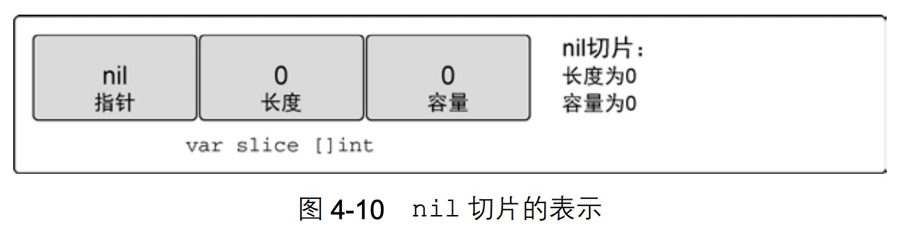
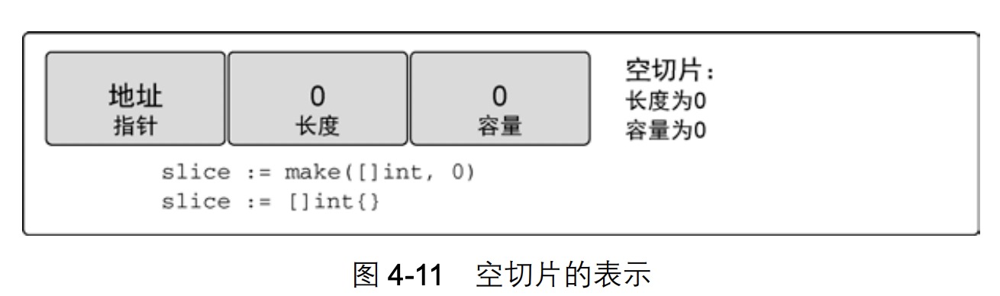
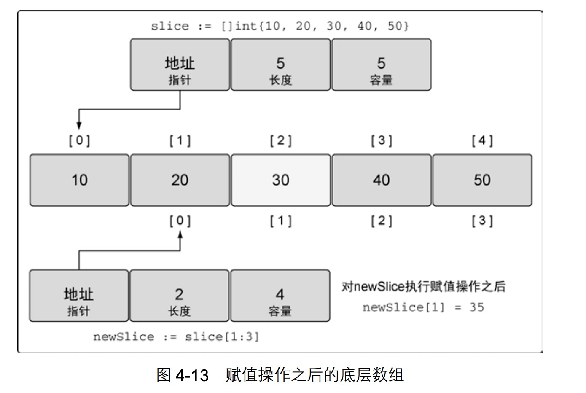
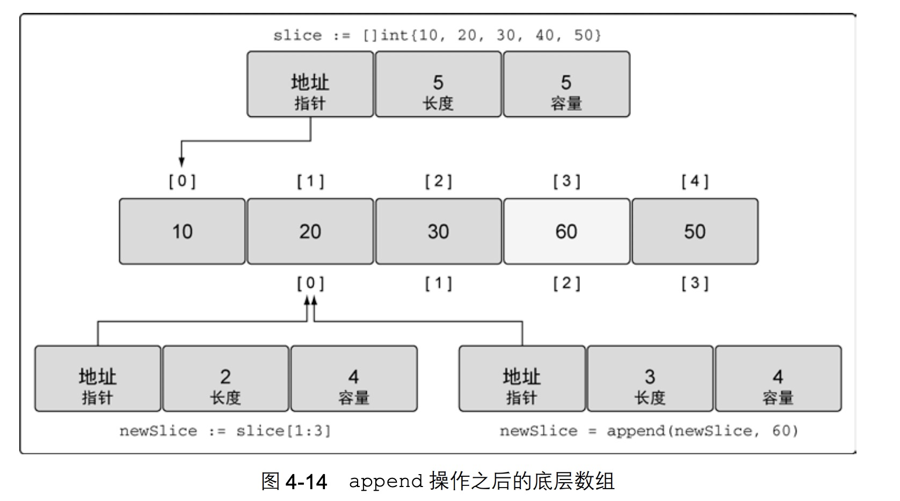
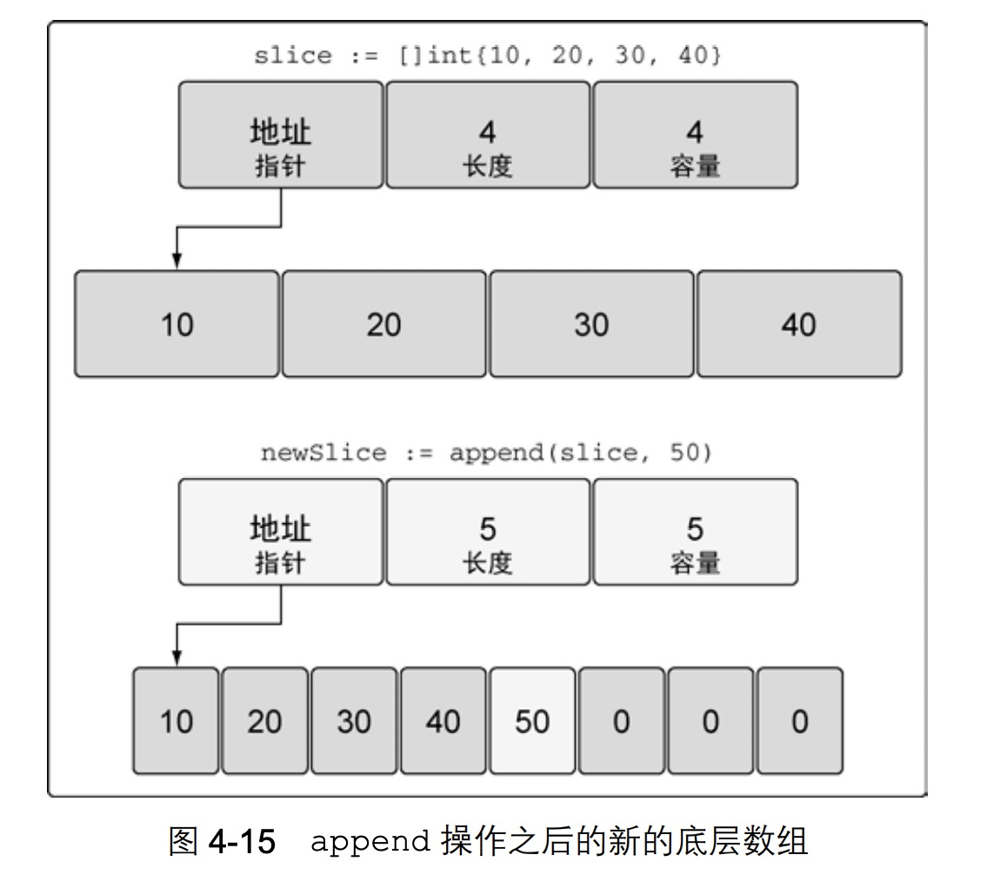
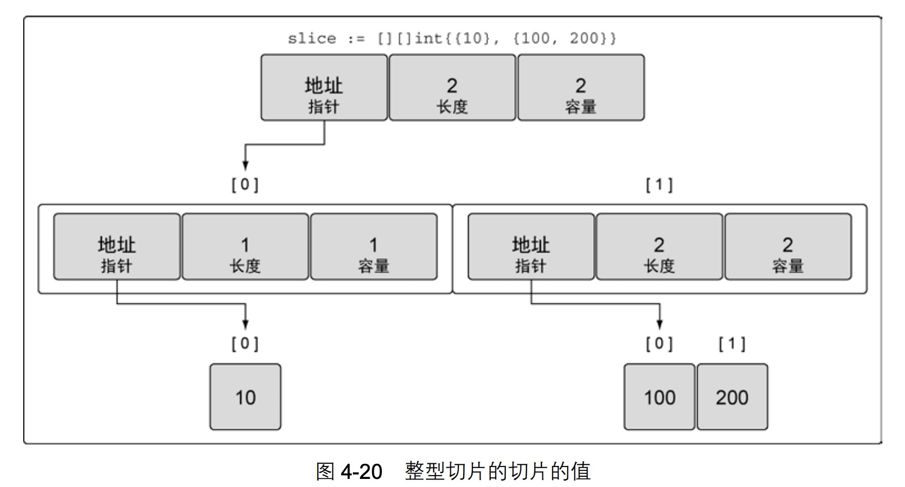
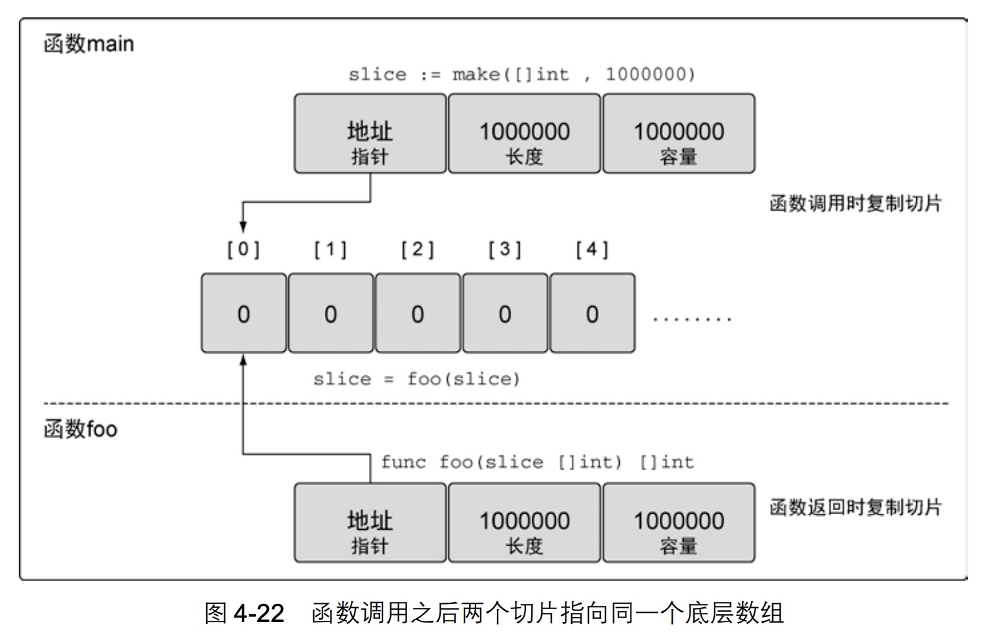
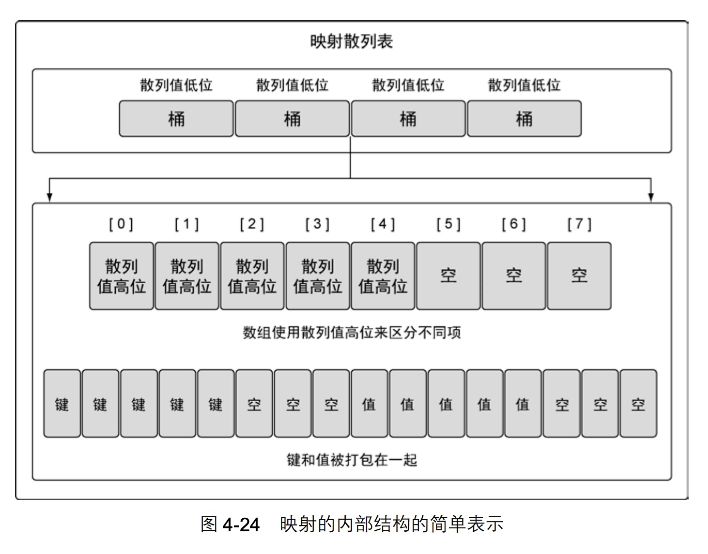

Go语言实战-数组、切片和映射
数组
数组是一个长度固定的数据类型，用于存储相同类型元素的连续块。
内部实现
占用内存是连续分配的，容易计算索引。

声明和初始化
声明一个数组，并初始化为零值。
var array [5]int |
使用数组字面量声明数组。
// 写法1 |
声明数组并指定特定元素的值。
// 具体初始化索引为1和2的元素，其余元素保持零值 |
一旦声明，数组存储的类型和长度就都不能改变了。如果需要存更多元素，就需要先创建一个更长的数组，再把旧的数组复制到新的数组里。
使用数组
访问数组元素。
array := [5]int{10, 20, 30, 40, 50} |
访问指针数组元素。
array := [5]*int{0: new(int), 1: new(int)} |
同类型的数组赋值给另一个数组。
只有数组长度和元素的类型都相同的数组，才能互相赋值。
var array1 [5]string |
指针数组赋值给另一个，两个数组指向同一组字符串。
var array1 [3]*string |
多维数组
声明二维数组。
var array [4][2]int |
访问二维数组的元素。
var array [2][2]int |
同类型多维数组赋值。
var array1 [2][2]int |
独立复制数组的某个维度。
var array3 [2]int = array1[1] |
在函数间传递数组
如果函数接受一个100万个整型值的数组，每次函数调用时，必须在栈上分配8MB的内存。之后数组的值被分配到刚分配的内存中。如何更好的利用内存，优化性能？可以只传入数组指针，也可以使用切片。
var array [1e6]int |
切片
内部实现

创建和初始化
只指定长度，使用make函数声明切片。
slice := make([]string, 5) |
只指定长度，那么切片的容量和长度相等。
指定长度和容量，使用make声明切片。
slice := make([]int, 3, 5) |
上诉切片可以访问 3 个元素，而底层数组拥有 5 个元素。剩余的 2 个元素可以在后期操作中合并到切片，就可访问到。
不允许容量小于长度。
// Error |
切片字面量声明切片。
slice := []string{"Red", "Yellow", "Blue"} |
使用索引声明切片。
// 创建长度和容量都为100的切片，并初始化第100个元素。 |
声明数组与切片的不同。
// 声明数组 |
nil和空切片。
var slice []int |

只要在声明时不做任何初始化，就会创建一个nil切片。
应用场景：
需要描述一个不存在的切片时。例如，函数要求返回一个切片但是发生异常的时候。
// 声明方式1 |

空切片是底层数组包含0个元素，也没有分配任何存储空间。
应用场景：
表示空集合。例如，数据库查询返回0个查询结果时。
使用切片
与数组中的索引指向元素赋值的方法一样，使用[]操作符就可以操作某个元素的值。
slice := []int{10, 20, 30} |
使用切片创建切片。
slice := []int{10, 20, 30, 40, 50} |

计算公式 slice[i:j]，k: 为切片容量。
长度：j - i (3 - 1)
容量：k - i (5 - 1)
注：修改了newSlice索引为1的元素，同时也会修改slice的索引为2的元素。
切片增长
append()调用返回时，会返回一个包含修改结果的新切片。append总会增加新切片的长度，而容量有可能会改变，也可能不会改变。这取决于被操作的切片的可用容量。
slice := []int{10, 20, 30, 40, 50} |

由于newSlice在底层数组还有额外的容量可用，append操作将可用的元素合并到切片的长度，并对其赋值60，由于和原始的slice共享同一个底层数组，slice中索引为3的元素的值也被改动了。
如果切片的底层数组没有足够的容量可用，append操作将会创建一个新的底层数组，将被引用的现有值复制到新数组里，再追加新的值。
slice := []int{10, 20, 30, 40} |

切片容量小于1000时，总是会成倍增加容量。一旦超过1000，容量的增长因子会设为1.25。随着语言的迭代，这种增长算法有可能会改变。
创建切片时的三个索引
source := []string{"Apple", "Orange", "Plum", "Banana", "Grape"} |
计算公式 slice[i:j:k]
长度：j - i (3 - 2)
容量：k - i (3 - 2)设置长度和容量一样的好处，如果不加第三个索引，剩余容量都属于slice，向slice追加元素会改变source底层数组索引3的元素值。不过在上面我们对slice的容量限制为1。当我们对slice调用append的时候，会创建一个新的底层数组。这样就不会在修改slice时，可能改到source切片。
设置容量大于已有容量会出现运行时错误
slice := source[2:3:6] |
将一个切片追加到另外一个切片上
// 使用...运算符。 |
迭代切片
for index, value := range s1 {} |
index是元素索引。
value是元素副本。传统for循环迭代切片可以对迭代更多控制，比如从索引为2开始迭代.。
多维切片
声明多维切片
slice := [][]int{{10}, {100, 200}} |

slice := [][]int{{10}, {100, 200}} |
多维切片可以让用户创建非常复杂且强大的数据结构。已经学过的关于内置函数 append的规则也可以应用到其上。
在函数间传递切片
传递切片的成本很低，在64位机器上，一个切片需要24字节：指针8字节，长度和容量分别8字节。
slice := make([]int, 1e6) |

映射
内部实现
映射的键通过散列函数生成散列值。
散列值的低八位被用来选择桶。
散列值的高八位存放在桶中的数组中，用来区分不同项。
键值对以字节数组的方式存放在桶中。
键值对以字节数组存储，先存键，再存值。为何不 key value key value …存储，而要key key… value value…存储？
答：是由于字节对齐会导致空间浪费，按照第二种方式存储可以减少浪费。
比如：key占用2个字节，value占用4个字节。其中1代表使用，0代表浪费。
第一种 ：{1 1 0 0}{1 1 1 1}{1 1 0 0}{1 1 1 1}{1 1 0 0}{1 1 1 1} 浪费6
第二种：{1 1 1 1}{1 1 0 0}{1 1 1 1}{1 1 1 1}{1 1 1 1} 浪费2

创建和初始化
// 使用make声明映射 |
// Error |
注意：
- 映射的键不能是切片、函数、以及包含切片的数据结构类型，这些类型具有引用语义。
- 映射的值不作限制。
使用映射
colors := map[string]string{} |
对 nil 映射赋值时的语言运行时错误
// Error |
从映射获取值并判断键是否存在
value, exists := colors["Blue"] |
使用range迭代映射
colors := map[string]string{ |
其实go按照经典的hashmap实现。只要值固定了不再修改，那么每次遍历的结果应该是一样的，但是Go工程师做了点小处理。对key次序做随机化，以提醒大家不要依赖range遍历返回的key次序。
从映射中删除一项
// 使用内置的delete函数 |
在函数间传递映射
函数间传递映射并不会制造出该映射的一个副本。当传递映射给一个函数，并对这个映射做了修改时，所有对这个映射的引用都会察觉到这个修改。
func main() { |
小结
- 数组是构造切片和映射的基石
- 切片有容量限制，不过可以使用内置的 append 函数扩展容量。
- 映射的增长没有容量或者任何限制。
- 内置函数 len 可以用来获取切片或者映射的长度。
- 内置函数 cap 只能用于切片。
- 将切片或者映射传递给函数成本很小，并且不会复制底层的数据结构。